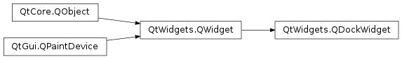

QDockWidget¶
Synopsis¶
Functions¶
- def
allowedAreas() - def
features() - def
initStyleOption(option) - def
isAreaAllowed(area) - def
isFloating() - def
setAllowedAreas(areas) - def
setFeatures(features) - def
setFloating(floating) - def
setTitleBarWidget(widget) - def
setWidget(widget) - def
titleBarWidget() - def
toggleViewAction() - def
widget()
Signals¶
- def
allowedAreasChanged(allowedAreas) - def
dockLocationChanged(area) - def
featuresChanged(features) - def
topLevelChanged(topLevel) - def
visibilityChanged(visible)
Detailed Description¶
The
PySide2.QtWidgets.QDockWidgetclass provides a widget that can be docked inside aPySide2.QtWidgets.QMainWindowor floated as a top-level window on the desktop.
PySide2.QtWidgets.QDockWidgetprovides the concept of dock widgets, also know as tool palettes or utility windows. Dock windows are secondary windows placed in the dock widget area around thecentral widgetin aPySide2.QtWidgets.QMainWindow.
Dock windows can be moved inside their current area, moved into new areas and floated (e.g., undocked) by the end-user. The
PySide2.QtWidgets.QDockWidgetAPI allows the programmer to restrict the dock widgets ability to move, float and close, as well as the areas in which they can be placed.
Appearance¶
A
PySide2.QtWidgets.QDockWidgetconsists of a title bar and the content area. The title bar displays the dock widgetswindow title, a float button and a close button. Depending on the state of thePySide2.QtWidgets.QDockWidget, the float and close buttons may be either disabled or not shown at all.The visual appearance of the title bar and buttons is dependent on the
stylein use.A
PySide2.QtWidgets.QDockWidgetacts as a wrapper for its child widget, set withPySide2.QtWidgets.QDockWidget.setWidget(). Custom size hints, minimum and maximum sizes and size policies should be implemented in the child widget.PySide2.QtWidgets.QDockWidgetwill respect them, adjusting its own constraints to include the frame and title. Size constraints should not be set on thePySide2.QtWidgets.QDockWidgetitself, because they change depending on whether it is docked; a dockedPySide2.QtWidgets.QDockWidgethas no frame and a smaller title bar.
-
class
PySide2.QtWidgets.QDockWidget([parent=nullptr[, flags=Qt.WindowFlags()]])¶ -
class
PySide2.QtWidgets.QDockWidget(title[, parent=nullptr[, flags=Qt.WindowFlags()]]) Parameters: - flags –
PySide2.QtCore.Qt.WindowFlags - title – unicode
- parent –
PySide2.QtWidgets.QWidget
Constructs a
PySide2.QtWidgets.QDockWidgetwith parentparentand window flagsflags. The dock widget will be placed in the left dock widget area.Constructs a
PySide2.QtWidgets.QDockWidgetwith parentparentand window flagsflags. The dock widget will be placed in the left dock widget area.The window title is set to
title. This title is used when thePySide2.QtWidgets.QDockWidgetis docked and undocked. It is also used in the context menu provided byPySide2.QtWidgets.QMainWindow.- flags –
-
PySide2.QtWidgets.QDockWidget.DockWidgetFeature¶ Constant Description QDockWidget.DockWidgetClosable The dock widget can be closed. On some systems the dock widget always has a close button when it’s floating (for example on MacOS 10.5). QDockWidget.DockWidgetMovable The dock widget can be moved between docks by the user. QDockWidget.DockWidgetFloatable The dock widget can be detached from the main window, and floated as an independent window. QDockWidget.DockWidgetVerticalTitleBar The dock widget displays a vertical title bar on its left side. This can be used to increase the amount of vertical space in a PySide2.QtWidgets.QMainWindow.QDockWidget.AllDockWidgetFeatures (Deprecated) The dock widget can be closed, moved, and floated. Since new features might be added in future releases, the look and behavior of dock widgets might change if you use this flag. Please specify individual flags instead. QDockWidget.NoDockWidgetFeatures The dock widget cannot be closed, moved, or floated.
-
PySide2.QtWidgets.QDockWidget.allowedAreas()¶ Return type: PySide2.QtCore.Qt.DockWidgetAreas
-
PySide2.QtWidgets.QDockWidget.allowedAreasChanged(allowedAreas)¶ Parameters: allowedAreas – PySide2.QtCore.Qt.DockWidgetAreas
-
PySide2.QtWidgets.QDockWidget.dockLocationChanged(area)¶ Parameters: area – PySide2.QtCore.Qt.DockWidgetArea
-
PySide2.QtWidgets.QDockWidget.features()¶ Return type: PySide2.QtWidgets.QDockWidget.DockWidgetFeatures
-
PySide2.QtWidgets.QDockWidget.featuresChanged(features)¶ Parameters: features – PySide2.QtWidgets.QDockWidget.DockWidgetFeatures
-
PySide2.QtWidgets.QDockWidget.initStyleOption(option)¶ Parameters: option – PySide2.QtWidgets.QStyleOptionDockWidgetInitialize
optionwith the values from thisPySide2.QtWidgets.QDockWidget. This method is useful for subclasses when they need aPySide2.QtWidgets.QStyleOptionDockWidget, but don’t want to fill in all the information themselves.See also
-
PySide2.QtWidgets.QDockWidget.isAreaAllowed(area)¶ Parameters: area – PySide2.QtCore.Qt.DockWidgetAreaReturn type: PySide2.QtCore.boolReturns
trueif this dock widget can be placed in the givenarea; otherwise returnsfalse.
-
PySide2.QtWidgets.QDockWidget.isFloating()¶ Return type: PySide2.QtCore.bool
-
PySide2.QtWidgets.QDockWidget.setAllowedAreas(areas)¶ Parameters: areas – PySide2.QtCore.Qt.DockWidgetAreas
-
PySide2.QtWidgets.QDockWidget.setFeatures(features)¶ Parameters: features – PySide2.QtWidgets.QDockWidget.DockWidgetFeatures
-
PySide2.QtWidgets.QDockWidget.setFloating(floating)¶ Parameters: floating – PySide2.QtCore.bool
-
PySide2.QtWidgets.QDockWidget.setTitleBarWidget(widget)¶ Parameters: widget – PySide2.QtWidgets.QWidgetSets an arbitrary
widgetas the dock widget’s title bar. Ifwidgetis 0, any custom title bar widget previously set on the dock widget is removed, but not deleted, and the default title bar will be used instead.If a title bar widget is set,
PySide2.QtWidgets.QDockWidgetwill not use native window decorations when it is floated.Here are some tips for implementing custom title bars:
Mouse events that are not explicitly handled by the title bar widget must be ignored by calling
QMouseEvent.ignore(). These events then propagate to thePySide2.QtWidgets.QDockWidgetparent, which handles them in the usual manner, moving when the title bar is dragged, docking and undocking when it is double-clicked, etc.When
DockWidgetVerticalTitleBaris set onPySide2.QtWidgets.QDockWidget, the title bar widget is repositioned accordingly. InPySide2.QtWidgets.QWidget.resizeEvent(), the title bar should check what orientation it should assume:dockWidget = parentWidget() if dockWidget.features() & QDockWidget.DockWidgetVerticalTitleBar: # I need to be vertical else: # I need to be horizontal
The title bar widget must have a valid
QWidget.sizeHint()andQWidget.minimumSizeHint(). These functions should take into account the current orientation of the title bar.It is not possible to remove a title bar from a dock widget. However, a similar effect can be achieved by setting a default constructed
PySide2.QtWidgets.QWidgetas the title bar widget.
Using
qobject_cast()as shown above, the title bar widget has full access to its parentPySide2.QtWidgets.QDockWidget. Hence it can perform such operations as docking and hiding in response to user actions.See also
PySide2.QtWidgets.QDockWidget.titleBarWidget()DockWidgetVerticalTitleBar
-
PySide2.QtWidgets.QDockWidget.setWidget(widget)¶ Parameters: widget – PySide2.QtWidgets.QWidgetSets the widget for the dock widget to
widget.If the dock widget is visible when
widgetis added, you mustPySide2.QtWidgets.QWidget.show()it explicitly.Note that you must add the layout of the
widgetbefore you call this function; if not, thewidgetwill not be visible.
-
PySide2.QtWidgets.QDockWidget.titleBarWidget()¶ Return type: PySide2.QtWidgets.QWidgetReturns the custom title bar widget set on the
PySide2.QtWidgets.QDockWidget, or 0 if no custom title bar has been set.
-
PySide2.QtWidgets.QDockWidget.toggleViewAction()¶ Return type: PySide2.QtWidgets.QActionReturns a checkable action that can be used to show or close this dock widget.
The action’s text is set to the dock widget’s window title.
See also
QAction.textQWidget.windowTitle
-
PySide2.QtWidgets.QDockWidget.topLevelChanged(topLevel)¶ Parameters: topLevel – PySide2.QtCore.bool
-
PySide2.QtWidgets.QDockWidget.visibilityChanged(visible)¶ Parameters: visible – PySide2.QtCore.bool
-
PySide2.QtWidgets.QDockWidget.widget()¶ Return type: PySide2.QtWidgets.QWidgetReturns the widget for the dock widget. This function returns zero if the widget has not been set.
© 2018 The Qt Company Ltd. Documentation contributions included herein are the copyrights of their respective owners. The documentation provided herein is licensed under the terms of the GNU Free Documentation License version 1.3 as published by the Free Software Foundation. Qt and respective logos are trademarks of The Qt Company Ltd. in Finland and/or other countries worldwide. All other trademarks are property of their respective owners.